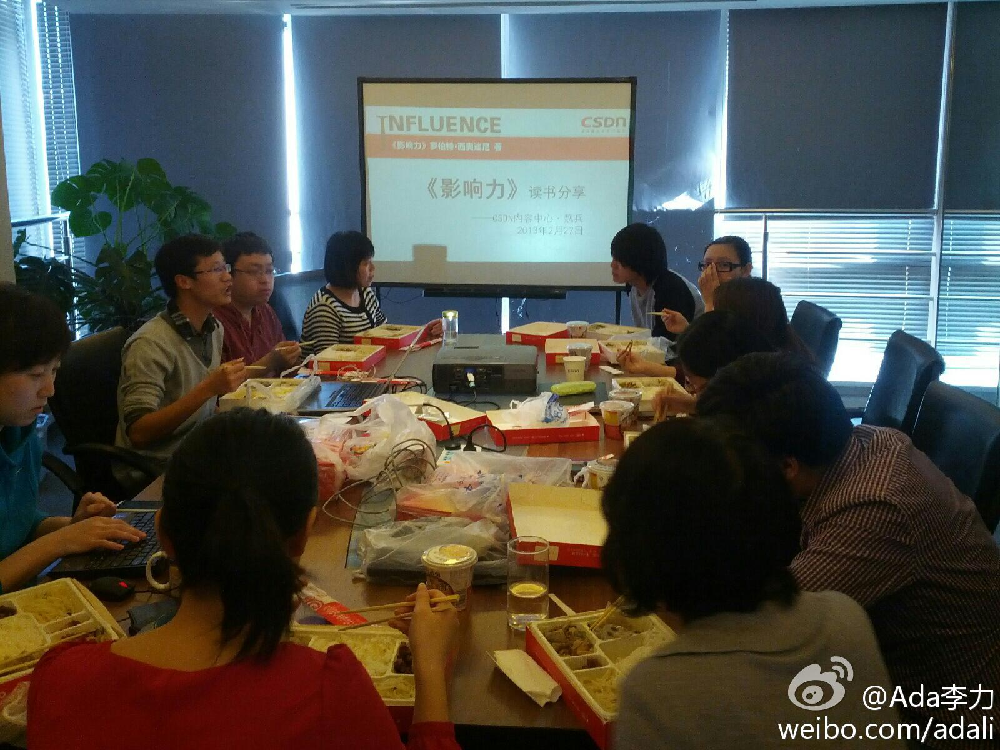

我把这个功能从微信里删了。去年过年期间玩过一段时间，有不少比例都是约炮的。//@Rapper老赛:我经常回应的。@ShoeneZukunft:原来扔出去的漂流瓶真的会有陌生人捡拾回应，看来人性还是有点小美好的。
这期社区运营午餐会的话题是<影响力>读书会。分享者@魏秃驴 用很多工作和生活中的现象来说明书中的原则，比如前一阵子讨论的托儿，运用的是“社会认同”原则，书中其它的原则包括：互惠，承诺和一致性，喜好，权威，稀缺 
还有谁遭遇过这个事件？Donews爆360的丑，还是有历史渊源的。Donews的老大刘韧，曾被周红祎送进了监狱。@DoNews:360内藏黑匣子 工蜂般盗取个人隐私信息：一件真事：一家IT公司产品上线前一天，360同类产品突然上线，且页面与该公司几乎相同。谁是泄密者？实查发现，该公司员工电脑上安了360产品。全面禁止360产品后，再没发生过类似情况。360多年宣称的 “用户隐私大于天”的谎言正式被揭穿。网页链接
大家有没有痛扁他？一个原因是蠢，浪费了这么个机会；一个原因是炫富，还是替别人炫富。@JaneZhang_BJ:在美国商会听外国人出入境部门的负责人对新出台的出入境管理条例做宣讲。在最后Q&A环节，很多人举手提问关于在中国申请居留签证的问题。提问名额有限，最后抢到的人挺高兴，大声问：“我们老板有好几个妻子，中方能否给每个老婆提供家属签证？”
刚和入住我家的沙发客Didier一起吃玩晚饭。他是法国人，会英法德三种语言，26岁，硕士毕业后，工作两年后攒些钱后就辞职开始了环球旅行，想找到自己的下一个领域或者工作，反正是不想再做原来的电子行业，也不想回到法国。我年轻时不知道有这种生活方式，现在是知道也只能欣赏而不能去体验了。
回复@黄小非:好建议。等招待完写。 //@黄小非:CS活动哇，和CS一样也叫CS，很好的活动方式，但是我国人民参与得不多，尤其是象你这样有家室的能参与就更加难能可贵。有空的话写一篇长微博介绍一下这项活动呗，尤其是你参与的原因和对这个活动的理解。@Ada李力:刚和入住我家的沙发客Didier一起吃玩晚饭。他是法国人，会英法德三种语言，26岁，硕士毕业后，工作两年后攒些钱后就辞职开始了环球旅行，想找到自己的下一个领域或者工作，反正是不想再做原来的电子行业，也不想回到法国。我年轻时不知道有这种生活方式，现在是知道也只能欣赏而不能去体验了。
沙发客Didier之前的旅行，住宿在青年旅社，能交到许多和他一样的年轻朋友，而且旅途还可以做伴。而他这趟选择沙发客形式，是想和旅行中的当地人接触，实地体验当地文化，招待家庭的真实生活等等。这趟旅途，俄罗斯呆了两周。蒙古国牧民家呆了两周。北京计划呆五天，他是边走边计划。
长知识//@星星老豆:这个问题其实并不弱智：有些阿拉伯国家就可以有四个法定的妻子。德国的移民法就专门有这么一条：多个配偶的外国人取得德国长期居留的，仅实际与其共同生活的配偶可以取得相应的家属居留权。 //@Ada李力:大家有没有痛扁他？一个原因是蠢，浪费了这么个机会；一个原因是炫富，还是替别@JaneZhang_BJ:在美国商会听外国人出入境部门的负责人对新出台的出入境管理条例做宣讲。在最后Q&A环节，很多人举手提问关于在中国申请居留签证的问题。提问名额有限，最后抢到的人挺高兴，大声问：“我们老板有好几个妻子，中方能否给每个老婆提供家属签证？”